Отчет по Лабораторной работе №2. Параллельный парсинг веб-страниц и сохранение в базу данных.
Цель
Создать три программы на Python для параллельного парсинга множества веб-страниц с использованием подходов threading, multiprocessing и async. Все собранные данные должны быть сохранены в базу данных.
Задание №1 и №2
Описание программ
1. Threading
Программа использует многопоточность для параллельной загрузки и сохранения данных.
рассчет суммы:
async def partial_sum(start, end):
return sum(range(start, end))
async def calculate_sum():
num_tasks = 4
maximum = 10**9
step = maximum // num_tasks
tasks = []
for i in range(num_tasks):
start = i * step + 1
if i != num_tasks - 1:
end = (i + 1) * step + 1
else:
end = maximum + 1
task = asyncio.create_task(partial_sum(start, end))
tasks.append(task)
results = await asyncio.gather(*tasks)
return sum(results)
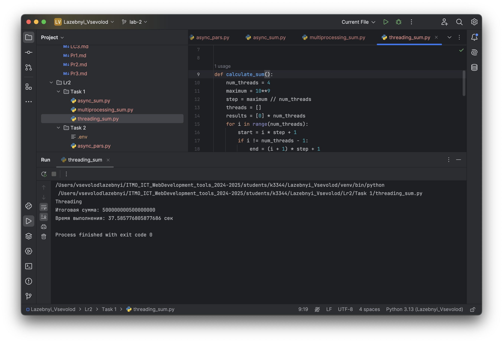
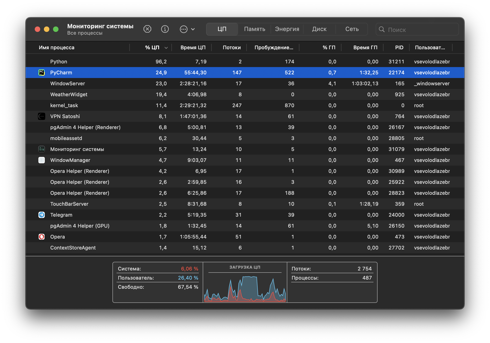
models.py для бд хранилища
from sqlmodel import SQLModel, Field
from datetime import date
class StockData(SQLModel, table=True):
id: int = Field(default=None, primary_key=True)
asset_name: str
ticker: str
investing_id: int
date: date
open_price: float
high_price: float
low_price: float
close_price: float
volume: int
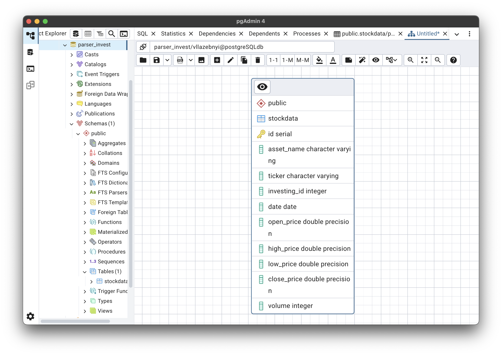
парсинг акций с разных URL использованием библиотек yfinance.
def fetch_historical_data(asset):
ticker = asset['ticker']
stock = yf.Ticker(ticker)
df = stock.history(start="2023-01-01", end="2024-12-31")
if df.empty:
return asset, None
data = df.reset_index().to_dict('records')
return asset, data
def save_data_to_db(asset, data):
if not data:
print(f"No data to save for {asset['name']} ({asset['ticker']})")
return
records = []
for entry in data:
date_obj = entry['Date'].date() if isinstance(entry['Date'], pd.Timestamp) else entry['Date']
record = StockData(
asset_name=asset['name'],
ticker=asset['ticker'],
investing_id=0,
date=date_obj,
open_price=float(entry['Open']),
high_price=float(entry['High']),
low_price=float(entry['Low']),
close_price=float(entry['Close']),
volume=int(entry['Volume']) if 'Volume' in entry else 0
)
records.append(record)
with get_session() as db_session:
for record in records:
db_session.add(record)
db_session.commit()
print(f"Saved {len(records)} for {asset['name']} ({asset['ticker']})")
def process_asset(asset):
asset, data = fetch_historical_data(asset)
save_data_to_db(asset, data)
def main():
assets_to_search = [
{"name": "Apple Inc.", "ticker": "AAPL"},
{"name": "Tesla, Inc.", "ticker": "TSLA"},
{"name": "Sberbank of Russia", "ticker": "SBER.ME"},
{"name": "Brent Crude Oil", "ticker": "BZ=F"},
{"name": "WTI Crude Oil", "ticker": "CL=F"}
]
threads = []
for asset in assets_to_search:
thread = threading.Thread(target=process_asset, args=(asset,))
threads.append(thread)
thread.start()
for thread in threads:
thread.join()
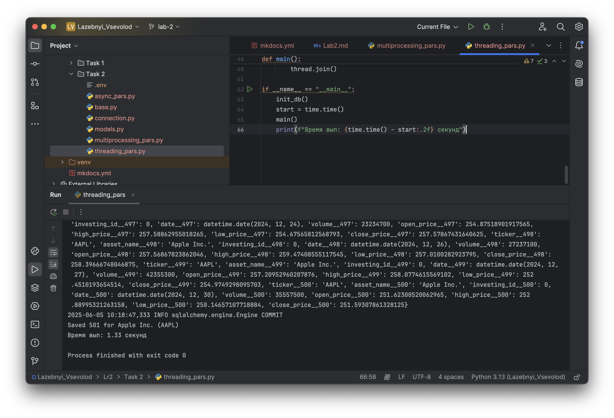
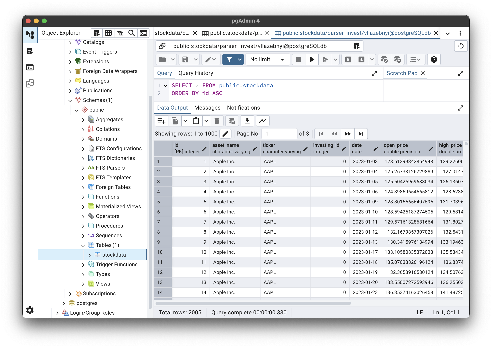
2. Multiprocessing
Программа использует многопроцессорность для параллельной загрузки и сохранения данных.
def partial_sum(start, end, result, index):
result[index] = sum(range(start, end))
def calculate_sum():
num_processes = multiprocessing.cpu_count()
maximum = 10**9
step = maximum // num_processes
manager = multiprocessing.Manager()
processes = []
results = manager.list([0] * num_processes)
for i in range(num_processes):
start = i * step + 1
if i != num_processes - 1:
end = (i + 1) * step + 1
else:
end = maximum + 1
process = multiprocessing.Process(target=partial_sum, args=(start, end, results, i))
processes.append(process)
process.start()
for process in processes:
process.join()
return sum(results)
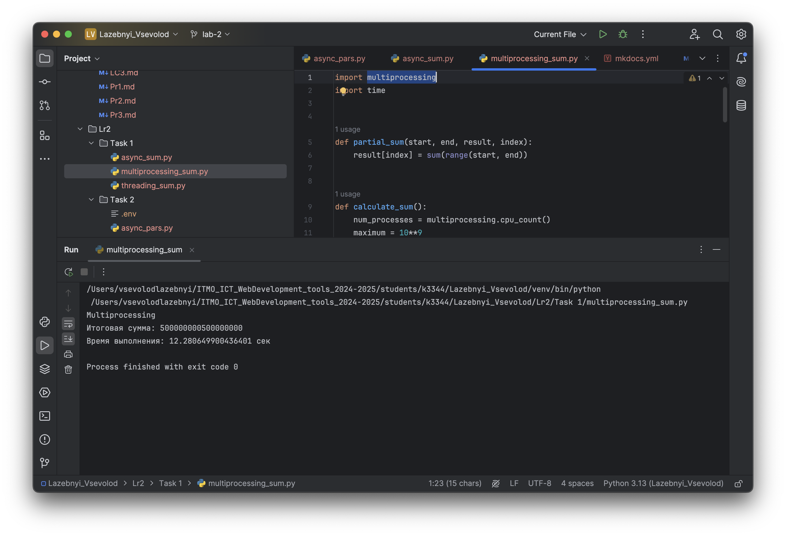
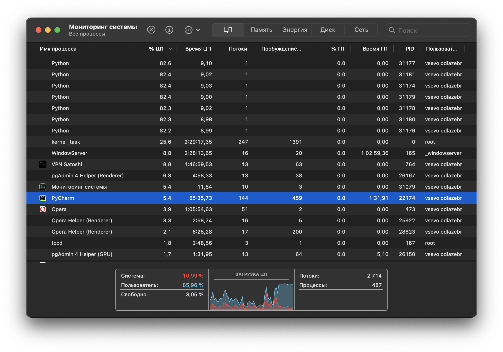
def fetch_historical_data(asset):
ticker = asset['ticker']
stock = yf.Ticker(ticker)
df = stock.history(start="2023-01-01", end="2024-12-31")
if df.empty:
return asset, None
data = df.reset_index().to_dict('records')
return asset, data
def save_data_to_db(asset, data):
if not data:
print(f"No data to save for {asset['name']} ({asset['ticker']})")
return
records = []
for entry in data:
date_obj = entry['Date'].date() if isinstance(entry['Date'], pd.Timestamp) else entry['Date']
record = StockData(
asset_name=asset['name'],
ticker=asset['ticker'],
investing_id=0,
date=date_obj,
open_price=float(entry['Open']),
high_price=float(entry['High']),
low_price=float(entry['Low']),
close_price=float(entry['Close']),
volume=int(entry['Volume']) if 'Volume' in entry else 0
)
records.append(record)
with get_session() as db_session:
for record in records:
db_session.add(record)
db_session.commit()
print(f"Saved {len(records)} records for {asset['name']} ({asset['ticker']})")
def process_asset(asset):
asset, data = fetch_historical_data(asset)
save_data_to_db(asset, data)
def main():
assets_to_search = [
{"name": "Apple Inc.", "ticker": "AAPL"},
{"name": "Tesla, Inc.", "ticker": "TSLA"},
{"name": "Sberbank of Russia", "ticker": "SBER.ME"},
{"name": "Brent Crude Oil", "ticker": "BZ=F"},
{"name": "WTI Crude Oil", "ticker": "CL=F"}
]
with Pool(processes=3) as pool:
pool.map(process_asset, assets_to_search)
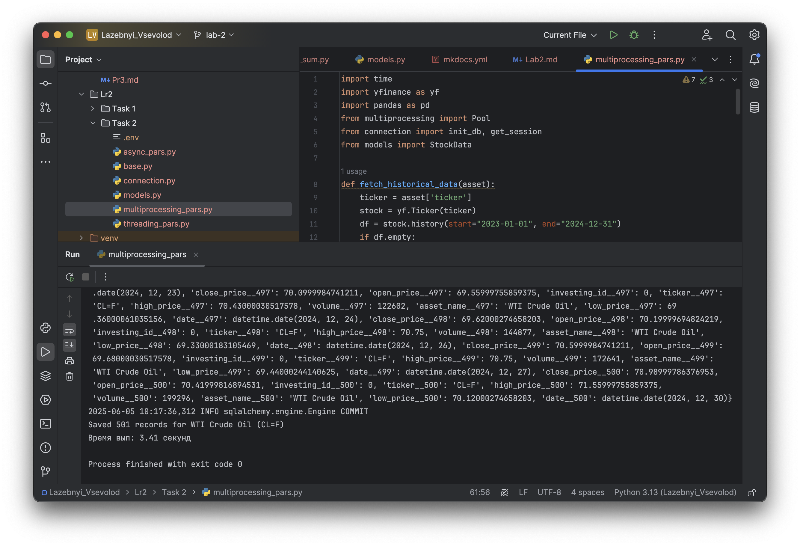
3. Asyncio
Программа использует асинхронность для параллельной загрузки и сохранения данных.
async def partial_sum(start, end):
return sum(range(start, end))
async def calculate_sum():
num_tasks = 4
maximum = 10**9
step = maximum // num_tasks
tasks = []
for i in range(num_tasks):
start = i * step + 1
if i != num_tasks - 1:
end = (i + 1) * step + 1
else:
end = maximum + 1
task = asyncio.create_task(partial_sum(start, end))
tasks.append(task)
results = await asyncio.gather(*tasks)
return sum(results)
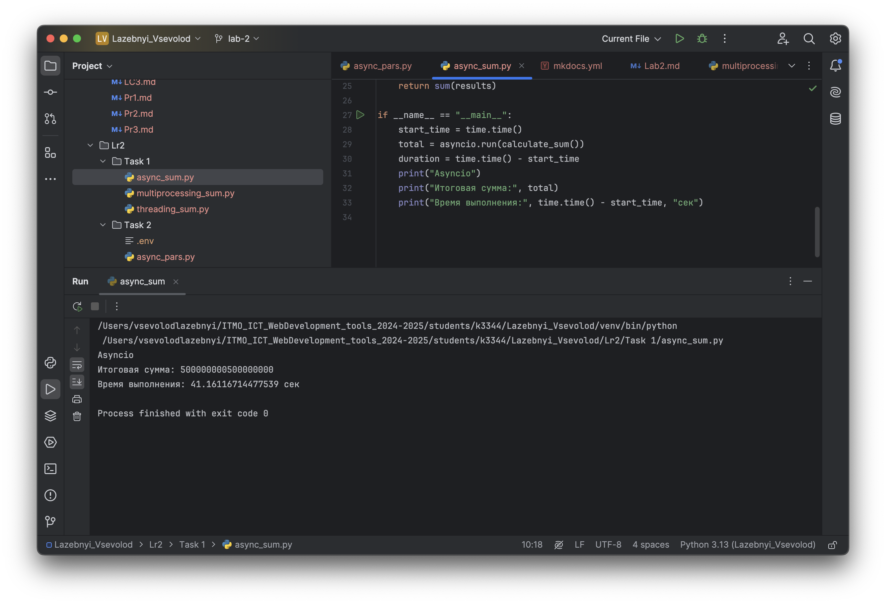
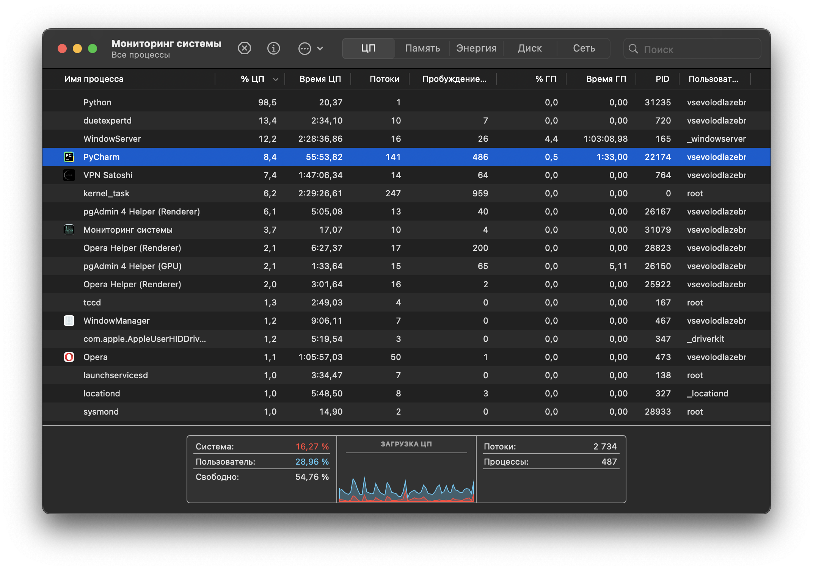
async def fetch_historical_data(asset):
try:
ticker = asset['ticker']
stock = yf.Ticker(ticker)
df = stock.history(start="2023-01-01", end="2024-12-31")
if df.empty:
return asset, None
data = df.reset_index().to_dict('records')
return asset, data
except Exception:
return asset, None
async def save_data_to_db(asset, data):
if not data:
print(f"No data to save for {asset['name']} ({asset['ticker']})")
return
records = []
for entry in data:
try:
date_obj = entry['Date'].date() if isinstance(entry['Date'], pd.Timestamp) else entry['Date']
record = StockData(
asset_name=asset['name'],
ticker=asset['ticker'],
investing_id=0,
date=date_obj,
open_price=float(entry['Open']),
high_price=float(entry['High']),
low_price=float(entry['Low']),
close_price=float(entry['Close']),
volume=int(entry['Volume']) if 'Volume' in entry else 0
)
records.append(record)
except (ValueError, KeyError, TypeError):
continue
try:
with get_session() as db_session:
for record in records:
db_session.add(record)
db_session.commit()
except Exception as e:
print(f"Failed to save data {asset['name']} ({asset['ticker']}) {e}")
async def process_asset(asset):
_, data = await fetch_historical_data(asset)
await save_data_to_db(asset, data)
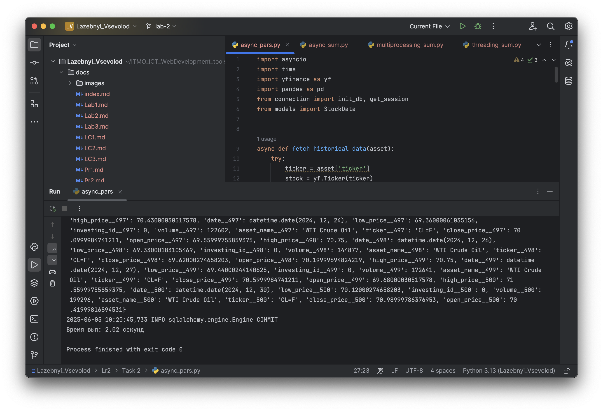
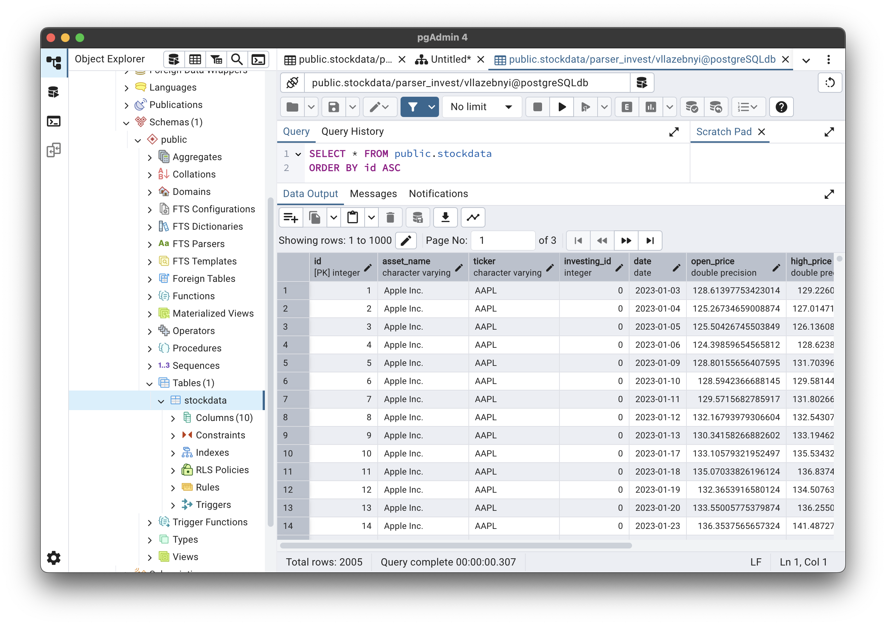
Результаты
| Подход | Время выполнения задания 1 | Время выполнения задания 2 |
|---|---|---|
| Threading | 37.5 сек | 1.33 |
| Multiprocessing | 12.3 сек | 3.41 только из-за ошибки с парсингом акций сбера |
| Asyncio | 41.2 сек | 2.02 |


Вывод
В ходе выполнения лабораторной работы были реализованы три подхода к параллельному парсингу веб-страниц:
- Threading - подходит для задач, требующих большого количества операций ввода-вывода, но GIL ограничивает эффективность.
- Multiprocessing - обеспечивает наилучшие результаты для CPU-bound задач, так как каждый процесс работает отдельно.
- Asyncio - хорошо подходит для асинхронных операций ввода-вывода, таких как HTTP-запросы, но зависит от количества ожидающих операций.
Эти наблюдения помогут выбрать методы обработки для различных задач, основываясь на их потребностях.